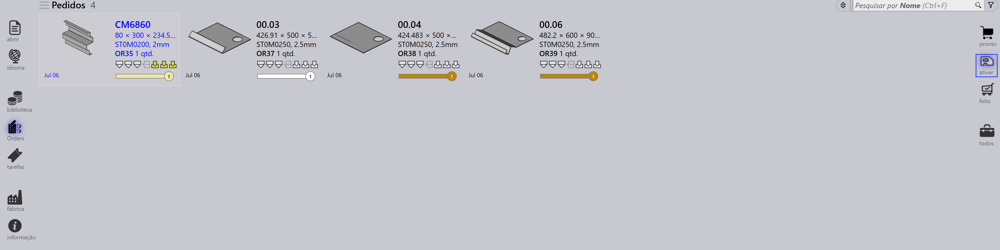
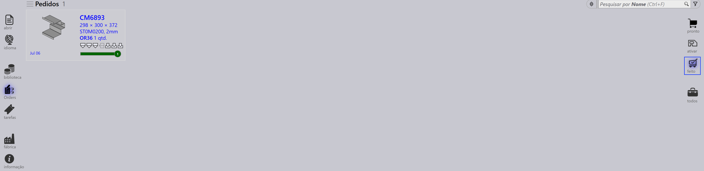

Visualização de pedidos
As opções no lado direito da página Orders representam diferentes visualizações de pedidos com base em seu estágio de processamento. Selecionar uma visualização atualiza os pedidos exibidos, permitindo que você se concentre em estágios específicos do fluxo de trabalho.
Ready
Selecionar a visualização Ready exibe pedidos que estão preparados mas ainda não foram convertidos em tarefas.

-
Mostra pedidos que estão prontos para criação de tarefa.
-
Útil para identificar pedidos pendentes de processamento.
Active
Selecionar a visualização Active exibe pedidos que foram convertidos em tarefas e estão sendo processados atualmente.

-
Representa pedidos já movidos para o estágio de Tarefa.
-
Ajuda a rastrear pedidos que estão em execução.
-
Útil para monitorar a produção em andamento.
Done
Selecionar a visualização Done exibe pedidos que concluíram o processamento.

-
Mostra pedidos cujas tarefas associadas estão finalizadas.
-
Indica que o fluxo de trabalho está completo.
-
Útil para revisão e manutenção de registros.
All
Selecionar a visualização All exibe todos os pedidos independentemente do estágio.

-
Fornece uma visão geral completa de todos os pedidos.
-
Útil para pesquisar e gerenciar em todos os estágios.
Barra de status do pedido
A barra de status exibida abaixo de cada tile de pedido indica se o pedido está vinculado a uma tarefa. Existem dois tipos:
-
Sem barra - o pedido não está atribuído a nenhuma tarefa.
-
Com barra - o pedido faz parte de uma tarefa, e a barra mostra o respectivo status da tarefa conforme listado abaixo.
| Status do Pedido | Descrição |
|---|---|
|
Not ready |
|
Ready |
|
Bend Planned |
|
Sheet missing |
|
Bending queue |
|
Cutting Queue |
|
Done(Completed) |